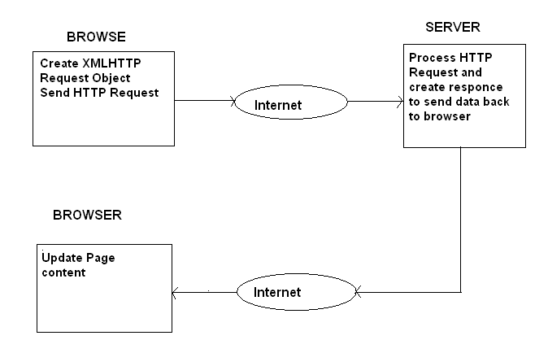

Filip Svetličić - senior frontend developer, Inchoo http://inchoo.net/author/filip-svetlicic/ Osijek Software City, http://softwarecity.hr J. J. Strossmayer University of Osijek – Department of Mathematics, http://www.mathos.unios.hr/
http://ficosvt.github.io/forms-ajax-data-types/ (source at https://github.com/ficosvt/forms-ajax-data-types/)
Google Chrome with built-in dev tools https://developers.google.com/chrome-developer-tools/
http://www.codecademy.com/ Learn to code interactively. Register. http://jsfiddle.net Online code editor and playground. Register.
HTML Forms are one of the main points of interaction between a user and a web site or application. They allow users to send data to the web site. Most of the time that data is sent to the web server, but the web page can also intercept it to use it on its own. An HTML Form is made of one or more widgets. Those widgets can be text fields (single line or multiline), select boxes, buttons, checkboxes, or radio buttons. Most of the time, those widgets are paired with a label that describes their purpose. In javascript, you can access forms through DOM (Document Object Model) object document in two ways. First is to use property forms.
What's the problem with this approach? The problem occurs in situations when adding additional forms to the page. Second approach is to use getElementById() method which is far more precise.
Main form elements are input, select, textarea, and button. Most common used form element is the input element. Select element defines a drop-down list. Textarea element defines a multi-line input field (a text area). Button element defines a clickable button.
List of properties that can be accesed through javascript: disabled, form, length, options, selectedIndex, type Select options are added to options array. Each one is an object with several properties. For validation checks, properties are selected, value and text. https://jsfiddle.net/FicoSv/sd85m3on/
The input element can vary in many ways, depending on the attribute type. List of all available input types http://www.w3schools.com/tags/att_input_type.asp Radio button examples https://jsfiddle.net/FicoSv/p9xwkofk/ Checkbox examples https://jsfiddle.net/FicoSv/hczbfe84/
Main event for handling forms is submit. We can also attach event directly to html element or we can use DOM level 2 event listeners. Besides submit, we can manipulate with focus, blur, change and select events.
The blur event is triggered when the element loses focus. This event is commonly used with input elements, but can be used with other HTML elements. An element can lose focus when the mouse is clicked outside of the element or through keyboard commands, such as, tabbing out of an input element. Blur is different from a change event because the blur event fires when focus is lost. The change event will fire only when a change is made to the element. The select event fires when text is selected in an input element that's type is set to text or a textarea element. The submit event attaches to the form and not an element on the form. Let's inspect some of the form events on few real examples: https://jsfiddle.net/FicoSv/yo6bbeze/
Forms validation on the client-side is essential — it saves time and bandwidth, and gives you more options to point out to the user where they’ve gone wrong in filling out the form. As soon as we've configured and prepared our form elements on the client side, we need to handle data on the server side too. In our final example we'll use PHP. https://jsfiddle.net/FicoSv/0rmdtcLf/
AJAX is a technique for creating fast and dynamic web pages. AJAX allows web pages to be updated asynchronously by exchanging small amounts of data with the server behind the scenes. This means that it is possible to update parts of a web page, without reloading the whole page. Classic web pages, (which do not use AJAX) must reload the entire page if the content should change.
 In order to make an HTTP request to the server using JavaScript, you need an instance of a class that provides this functionality. This is where XMLHttpRequest comes in. Such a class was originally introduced in Internet Explorer as an ActiveX object called XMLHTTP. Then, Mozilla, Safari and other browsers followed, implementing an XMLHttpRequest class that supports the methods and properties of Microsoft's original ActiveX object. Cross-browser instance (object) of the required class:
At this stage, you just need to tell the HTTP request object which JavaScript function will handle processing the response. This is done by setting the onreadystatechange property of the object. We need to check for the state of the request. If the state has the value of 4, that means that the full server response has been received and it's OK for you to continue processing it. 0 (uninitialized) 1 (loading) 2 (loaded) 3 (interactive) 4 (complete) The next thing to check is the response code of the HTTP server response. We differentiate between a successful or unsuccessful AJAX call by checking for a 200 OK response code. Status codes definition list http://www.w3.org/Protocols/rfc2616/rfc2616-sec10.html
Make the request using open() and send() methods. The first parameter of the call to open() is the HTTP request method – GET, POST, HEAD or any other method you want to use and that is supported by your server. Keep the method capitalized as per the HTTP standard; otherwise some browsers (like Firefox) might not process the request. For more information on the possible HTTP request methods you can check the W3C specs. The second parameter is the URL of the page you're requesting. As a security feature, you cannot call pages on 3rd-party domains. Be sure to use the exact domain name on all of your pages or you will get a "permission denied" error when you call open(). A common pitfall is accessing your site by domain.tld, but attempting to call pages with www.domain.tld. If you really need to send a request to another domain, see HTTP access control. The optional third parameter sets whether the request is asynchronous. If TRUE (the default), the execution of the JavaScript function will continue while the response of the server has not yet arrived. This is the A in AJAX. The parameter to the send() method can be any data you want to send to the server if POST-ing the request. Form data should be sent in a format that the server can parse easily. This can be as a query string or in several other formats, including JSON, etc. The JavaScript Object Notation (JSON) is a data-interchange format. Although not a strict subset, JSON closely resembles a subset of JavaScript syntax. Though many programming languages support JSON, JSON is especially useful for JavaScript-based apps, including websites and browser extensions.
Let's check some real examples. https://jsfiddle.net/FicoSv/ea3s5u2h/ https://jsfiddle.net/FicoSv/3cu8ckxa/
http://www.w3schools.com/htmL/html_forms.asp http://www.w3schools.com/htmL/html_form_elements.asp http://www.w3schools.com/htmL/html_form_input_types.asp http://www.w3schools.com/htmL/html_form_attributes.asp http://www.w3schools.com/ajax/default.asp https://developer.mozilla.org/en-US/docs/AJAX https://developer.mozilla.org/en-US/docs/Glossary/JSON
2015 Filip Svetličić, Inchoo